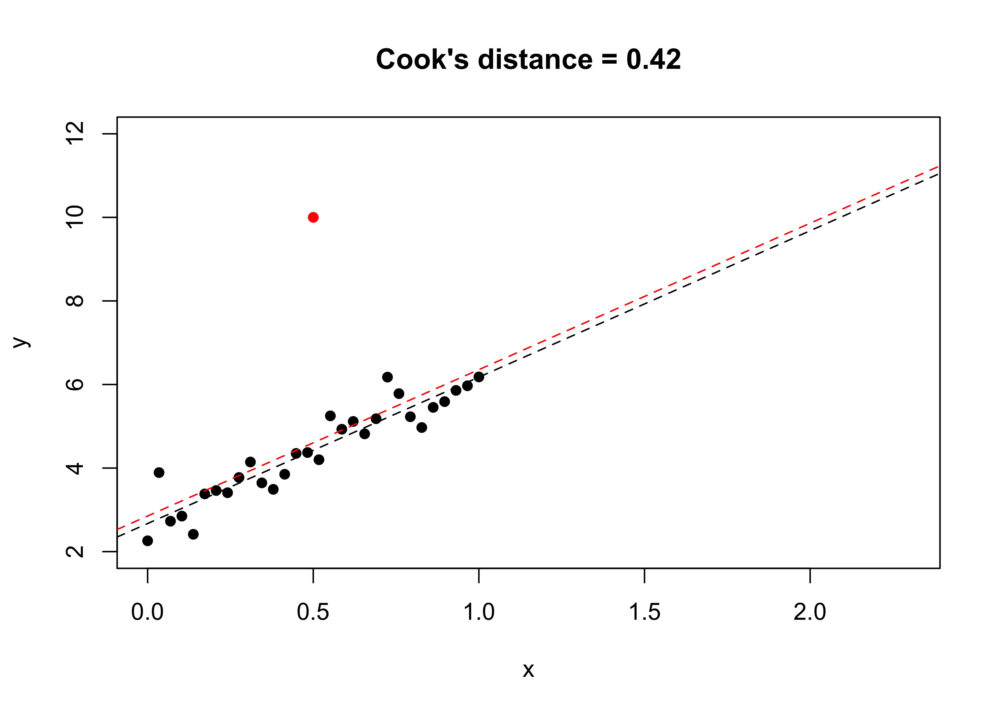
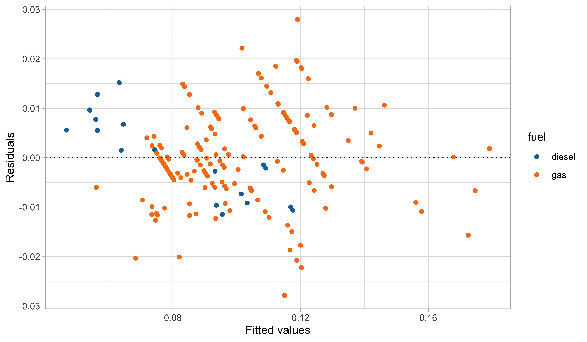

[1] 0.07431 0.13548 0.08825 0.13728 0.09629 0.09160 0.13882 0.09670 0.10866
[10] 0.11629 0.18067 0.14539 0.15869 0.14910 0.09550 0.23066 0.14751Point estimation
Statistical Inference - PhD EcoStatData
Homepage

This unit will cover the following topics:
- Methods of finding estimators
- Methods of evaluating estimators
- Unbiasedness
- Asymptotic evaluations
- Robustness and model misspecification
The rationale behind point estimation is quite simple:
When sampling is from a population described by a pdf or a pmf f(\cdot ; \theta), knowledge of \theta yields knowledge of the entire population.
Hence, it is natural to seek a method of finding a good estimator of the unknown point \theta.
Methods of finding estimators
Estimator
An estimator \hat{\theta}(Y_1,\dots,Y_n) is a function of the sample Y_1,\dots,Y_n and is a random variable.
An estimate \hat{\theta}(y_1,\dots,y_n) is a function of the realized values y_1,\dots,y_n and is a number.
We will write \hat{\theta} to denote both estimators and estimates whenever its meaning is clear from the context.
Method of moments
The method of moments is, perhaps, the oldest method of finding point estimators, dating back at least to Karl Pearson in the late 1800s.
Let Y_1,\dots,Y_n be an iid sample from f(\cdot; \theta), \theta = (\theta_1,\dots,\theta_p), and \Theta \subseteq \mathbb{R}^p. Moreover, define m_r = \frac{1}{n}\sum_{i=1}^n Y_i^r, \qquad \mu_r(\theta) = \mu_r(\theta_1,\dots,\theta_p) = \mathbb{E}_\theta(Y^r), \qquad r=1,\dots,p. corresponding to the population moment \mu_r(\theta_1,\dots,\theta_p) and the sample moment m_r.
The method of moments estimator \hat{\theta} is obtained by solving the following system of equations for (\theta_1,\dots,\theta_p): \begin{aligned} \mu_1(\theta_1,\dots,\theta_p) &= m_1, \\ \mu_2(\theta_1,\dots,\theta_p) &= m_2, \\ &\vdots \\ \mu_p(\theta_1,\dots,\theta_p) &= m_p. \\ \end{aligned}
In general, it is not guaranteed that a solution exists nor its uniqueness.
Asymptotic evaluation of the MM
Moments estimators are not necessarily the best estimators, but under reasonable conditions they are consistent, they have converge rate \sqrt{n}, and they are asymptotically normal.
Suppose (Y,Y^2,\dots,Y^p) has covariance \Sigma, then the multivariate central limit theorem implies that as n\rightarrow \infty \sqrt{n}\{m - \mu(\theta)\} \overset{\text{d}}{\longrightarrow} Z, \qquad Z\sim N_p(0, \Sigma), where m = (m_1,\dots,m_p) and \mu(\theta) = (\mu_1(\theta),\dots,\mu_p(\theta)).
Suppose also that \mu(\theta) is a one-to-one mapping and let g(\mu) be the inverse of \mu(\theta), that is g = \mu^{-1}. We assume that g has differentiable components g_r(\cdot) for r = 1,\dots,p.
The moments estimator can be written as \hat{\theta} = g(m) and \theta = g(\mu(\theta)). Then, as a consequence of the delta method, the following general result holds: \sqrt{n}(\hat{\theta} - \theta) \overset{\text{d}}{\longrightarrow} Z, \qquad Z\sim N_p\left(0, D \Sigma D^T\right), where D = [d_{rr'}] is a p \times p matrix whose entries are the derivatives d_{rr'} = \partial g_r(\mu)/\partial \mu_{r'}.
Refer to van der Vaart (1998), Theorem 4.1, pag. 35-36.
Example: beta distribution üìñ
Let Y_1,\dots,Y_n be an iid random sample from a beta distribution of parameters \alpha,\beta > 0 with density f(y; \alpha, \beta) = \frac{\Gamma(\alpha + \beta)}{\Gamma(\alpha)\Gamma(\beta)} y^{\alpha-1}(1 - y)^{\beta-1}, \qquad 0 < y < 1.
The moment estimator for (\alpha, \beta) is the (explicitly available) solution of the system of equations m_1 = \frac{\alpha}{\alpha + \beta}, \qquad m_2 = \frac{\alpha (\alpha+1)}{(\alpha + \beta) (\alpha + \beta + 1)}.
After some algebra we obtain the following relationship, which is a smooth and regular function of (m_1,m_2): \hat{\alpha} = m_1 \frac{m_1 - m_2}{m_2 - m_1^2}, \qquad \hat{\beta} = (1 - m_1) \frac{m_1 - m_2}{m_2 - m_1^2}. where \hat{\sigma}^2 = m_2 - m_1^2 is the sample variance. Remark: is it possible that m_1 < m_2?
Example: beta distribution (food expenditure)
- We consider data on proportion of income spent on food for a random sample of 38 households in a large US city.
Example: beta distribution (food expenditure)

- Estimated densities f(y; \hat{\alpha}, \hat{\beta}) for each income level, showing a reasonable fit in both cases.
Example: binomial with unknown trials MM üìñ
Let Y_1,\dots,Y_n be iid \textup{Bin}(N, p) and we assume that both N and p are unknown.
This is a somewhat unusual application of the binomial model, which can be used e.g. to estimate crime rates for crimes that are known to have many unreported occurrences.
Equating the first two moments yields the system of equations m_1 = N p, \qquad m_2 = N p(1-p) + N^2p^2.
After some algebra we obtain the moment estimator for (N, p), which is smooth and regular function of (m_1,m_2): \hat{p} = \frac{m_1}{\hat{N}}, \qquad \hat{N} = \frac{m_1^2}{m_1 - \hat{\sigma}^2}, where \hat{\sigma}^2 = m_2 - m_1^2 is the sample variance.
Remark: what if m_1 < \hat{\sigma}^2?
This problem is described in Example 7.2.2 Casella and Berger (2002), pag. 313.
Maximum likelihood estimator
The method of maximum likelihood is, by far, the most popular technique for deriving estimators, developed by Ronald A. Fisher in Fisher (1922; 1925).
Recall that L(\theta) = L(\theta; \bm{y}) is the likelihood function and \ell(\theta) = \log{L(\theta)} is the log-likelihood.
Intuitively, the MLE is a reasonable choice: it is the parameter point for which the observed sample is most likely.
Clearly, the MLE is also the maximizer of the log-likelihood: \ell(\hat{\theta}) = \max_{\theta \in \Theta} \ell(\theta).
Properties and remarks about the MLE üìñ
- Remark I: the MLE may not exists and is not necessarily unique. On the other hand, if \Theta \subseteq \mathbb{R}^p and l(\theta) is differentiable, then it can be found as the solution of the score equations: \ell^*(\theta) = \frac{\partial}{\partial \theta}\ell(\theta) = 0.
Remark II: often \hat{\theta} cannot be written explicitly as a function of the sample values, i.e. in general the MLE has no closed-form expression but it must be found using numerical procedures.
Remark III: the likelihood function has to be maximized in the set space \Theta specified by the statistical model, not over the set of the mathematically admissible values of \theta.
1 It generalizes to any g(\cdot). If \hat{\theta} is the MLE, then g(\hat{\theta}) is the “MLE” of an “induced likelihood”.
Example: Poisson with unknown mean üìñ
Let Y_1,\dots,Y_n be a iid random sample from a Poisson distribution of mean parameter \lambda > 0, with likelihood function L(\lambda) = \prod_{i=1}^n \frac{e^{-\lambda} \lambda^{y_i}}{y_i!}.
Therefore the log-likelihood, up to an additive constant c not depending on \lambda, is \ell(\lambda) = \sum_{i=1}^ny_i\log{\lambda} - n\lambda + c.
The maximum likelihood estimator \hat{\lambda} is found by maximizing \ell(\lambda). In this regular problem, this can be done by studying the first derivative: \ell^*(\lambda) = \frac{1}{\lambda}\sum_{i=1}^ny_i - n.
We solve \ell^*(\lambda) = 0, obtaining \hat{\lambda} = \bar{y}. This is indeed a maximizer of \ell(\lambda) (why?).
Example: binomial with unknown trials MLE
Let Y_1,\dots,Y_n be iid \textup{Bin}(N, p), and suppose N is unknown, while p is considered known. This constitutes a non-regular problem because N is discrete.
The likelihood function is L(N) = \prod_{i=1}^n\binom{N}{y_i} p^{y_i}(1 - p)^{N - y_i}, where the maximum cannot be obtained through differentiation, as N \in \mathbb{N}.
Naturally, we require that \hat{N} \ge \max_i y_i, since L(N) = 0 for any N < \max_i y_i. The ML is therefore an integer \hat{N} \ge \max_i y_i such that L(\hat{N}) \ge L(\hat{N} - 1), \qquad L(\hat{N} + 1) < L(\hat{N}).
This value must be found numerically. However, it can be shown2 that there exists exactly one such \hat{N}, meaning the MLE is unique.
2 This problem is described in Example 7.2.9 of Casella and Berger (2002), pag. 318. See also Example 7.2.13: such estimate has a large variance in practice.
Example: binomial with unknown trials MLE
- Let us consider the following data, in which both N and p are unknown. These are simulated data and the true values were N = 75 and p = 0.32.
[1] 16 18 22 25 27- The method of moments estimator gives \hat{N}_\text{MM} = 102 (rounded to the closest integer) and \hat{p}_\text{MM} = 0.21. The maximum likelihood, instead, gives \hat{N}_\text{ML} = 99 and \hat{p}_\text{ML} = 0.22.

- If we replace 27 with a 28, we obtain drastically different estimates, namely \hat{N}_\text{MM} = 195 and \hat{N}_\text{ML} = 191, demonstrating a large amount of variability.
M-estimators
- M- and Z- estimators are broad class of estimators that encompass the maximum likelihood (iid observations) and other popular methods as special cases. 3
3 A detailed discussion is offered in van der Vaart (1998), Chap. 5.
- Remark: when m(\theta; y) = \log{f(Y_i; \theta)} this coincides with the MLE of a model with iid observations.
Z-estimators
When \theta = (\theta_1,\dots,\theta_p), Q and q typically have p coordinate functions, namely we consider: Q_r(\theta) = \sum_{i=1}^n q_r(\theta; Y_i)= 0, \qquad r = 1,\dots,p.
In many examples q_r(y; \theta) are the partial derivatives of a function m(\theta; y), that is Q(\theta) = \frac{\partial}{\partial \theta} M(\theta). An example is the score function \ell^*(\theta). However, this is not always the case.
Huber estimators I
The location of a r.v. Y is a vague term that can be made precise by defining it as the expectation \mathbb{E}(Y), a quantile, or the center of symmetry, as in the following example.
Let Y_1,\dots,Y_n be a iid sample of real-valued random variables belonging to family of distributions \mathcal{F} defined as \mathcal{F} = \{f(y - \theta) : \theta \in \Theta \subseteq \mathbb{R} \}, for some unknown density f(y) symmetric around 0. The parameter \theta is the location.
Classical M- estimators for \theta are the mean and the median, maximizing: -\sum_{i=1}^n (Y_i - \theta)^2, \quad (\text{Mean}) \qquad \qquad - \sum_{i=1}^n |Y_i - \theta|, \quad (\text{Median}) or alternatively (Z- estimator forms) solving the equations \sum_{i=1}^n (Y_i - \theta) = 0, \quad (\text{Mean}) \qquad \qquad \sum_{i=1}^n \text{sign}(Y_i - \theta) = 0, \quad (\text{Median}).
Huber estimators II
Huber estimators can be regarded as a compromise between the mean and the median, maximizing the following function: M(\theta) = -\sum_{i=1}^n m(Y_i - \theta), \qquad m(y) = \begin{cases}\frac{1}{2}y^2 \quad &\text{ if } |y| \le k\\ k |y| - \frac{1}{2}k^2 \quad &\text{ if } |y| \ge k \end{cases} where k > 0 is a tuning parameter. The function m(y) is continuous and differentiable4. The choice k \rightarrow 0 leads to the median, whereas for k \rightarrow \infty we get the mean.
Equivalently, we can consider the solution of the following estimating equation: Q(\theta) = \sum_{i=1}^n q(Y_i - \theta)= 0, \qquad q(y) = \begin{cases} -k \quad &\text{ if }\: y \le -k\\ y \quad &\text{ if }\: |y| \le k \\ k \quad &\text{ if }\: y \ge k\end{cases}
Unfortunately, there is no closed-form expression and the equation must be solved numerically.
4 See Exercise 10.28 of Casella and Berger (2002).
Example: Newcomb’s speed of light
- Data y_1, \dots, y_{66} represent Simon Newcomb’s measurements (1882) of the speed of light. The data are recordes as deviations from 24,800 nanoseconds.
[1] 28 26 33 24 34 -44 27 16 40 -2 29 22 24 21 25 30 23 29 31
[20] 19 24 20 36 32 36 28 25 21 28 29 37 25 28 26 30 32 36 26
[39] 30 22 36 23 27 27 28 27 31 27 26 33 26 32 32 24 39 28 24
[58] 25 32 25 29 27 28 29 16 23There are two outliers (-44 and -2) which could influence the analysis.
We see that as k increases, the Huber estimate varies between the median (27) and the mean (26.21), so we interpret increasing k as decreasing robustness to outliers.
The suggested default for k is roughly k \approx 4.5, that is k = 1.5 \times \text{MAD}.
| k | 0 | 5 | 10 | 20 | 30 | 40 | 50 | 60 | 70 |
|---|---|---|---|---|---|---|---|---|---|
| Est. | 27 | 27.37 | 27.417 | 27.125 | 26.831 | 26.677 | 26.523 | 26.369 | 26.215 |
- Based on recent measurements, the true value of the speed of light, expressed in this scale, is 33. Huber estimate for reasonable values of k is closer than both median and mean.
Bayesian estimators
Bayesian estimators are obtained following a different inferential paradigm than the one considered here, but they also exhibit appealing frequentist properties.
Let L(\theta; \bm{y}) denote the likelihood function, and let \pi(\theta) represent the prior distribution. Bayesian inference is based on the posterior distribution, defined as: \pi(\theta \mid \bm{y}) = \frac{\pi(\theta) L(\theta; \bm{y})}{\int_\Theta \pi(\theta) L(\theta; \bm{y}) \mathrm{d}\theta}.
Under certain hypotheses, which will be clarified later, the posterior mean serves as an optimal Bayesian estimator: \hat{\theta}_\text{Bayes} = \mathbb{E}(\theta \mid \bm{Y}) = \frac{\int_\Theta \theta \: \pi(\theta) L(\theta; \bm{Y}) \mathrm{d}\theta}{\int_\Theta \pi(\theta) L(\theta; \bm{Y}) \mathrm{d}\theta}. However, this estimator is not always available in closed form.
Other “optimal” Bayesian estimators include, for instance, the posterior median.
Example: binomial Bayes estimator
Let Y_1,\dots,Y_n be iid Bernoulli random variables with probability p, and let the prior p \sim \text{Beta}(a, b). Moreover, let n_1 = \sum_{i=1}^n y_i be the number of successes out of n trials.
Standard calculations in Bayesian statistics yield the (conjugate) posterior (p \mid Y_1,\dots,Y_n) \sim \text{Beta}(a + n_1, b + n - n_1). Hence, the posterior mean is \hat{p} = \mathbb{E}(p \mid Y_1,\dots,Y_n) = \frac{a + n_1}{a + b + n}.
Note that we can rewrite \hat{p} in the following way: \hat{p} = \left(\frac{n}{a + b + n}\right)\bar{y} + \left(\frac{a + b}{a + b + n}\right) \left(\frac{a}{a + b}\right), that is, as a linear combination of the prior mean and the sample mean, with weights determined by a, b, and n.5
5 This is not a coincidence, and it essentially holds for general exponential families; see the elegant paper by Diaconis and Ylvisaker (1979).
Methods of evaluating estimators
Comparing estimators
We study the performance of estimators, aiming to determine when an estimator \hat{\theta} can be considered good or optimal.
This requires criteria for evaluation, often provided by decision theory, which relies on a loss function \mathscr{L}. The function \mathscr{L}(\theta, \hat{\theta}) quantifies the loss incurred when estimating \theta by \hat{\theta}.
Typically, we assume \mathscr{L}(\theta, \theta) = 0 \text{ (no loss for the correct estimate)}, \qquad \mathscr{L}(\theta, \hat{\theta}) \geq 0, for all \theta and \hat{\theta}.
Optimal estimators
An oracle estimator \hat{\theta}_\text{oracle}, which never makes errors, satisfies R(\theta; \hat{\theta}_\text{oracle}) = 0, for all \theta \in \Theta. Clearly, such an estimator does not exist.
An optimal estimator \hat{\theta}_\text{opt} uniformly minimizes the risk, meaning R(\theta; \hat{\theta}_\text{opt}) \leq R(\theta; \tilde{\theta}), for all \theta \in \Theta and estimators \tilde{\theta}. Except for trivial cases, such an estimator does not exist unless one restricts the class of estimators considered 6.
In fact, the constant estimator \hat{\theta}_\text{const}(\bm{Y}) = \theta_1 has zero risk when \theta = \theta_1 but positive risk otherwise. Thus, \hat{\theta}_\text{opt} would need R(\theta; \hat{\theta}_\text{opt}) = 0 for all \theta \in \Theta, making it identical to the oracle.
6 A common restriction is unbiasedness, namely the requirement \mathbb{E}_\theta(\hat{\theta}) = \theta. An alternative restriction is equivariance.
Admissible estimators
Broadly speaking, an admissible estimator \hat{\theta} will perform better than an alternative \tilde{\theta} for some values of \theta and worse for others.
In principle, disregarding any practical implications, an inadmissible estimator should not be used, as it is dominated by a better alternative.
The admissibility criterion is interesting due to its selective nature, eliminating dominated estimators.
However, admissibility alone is not enough: for instance, the constant estimator \hat{\theta}_\text{const} = \theta_1 is admissible but clearly unsatisfactory.
The choice of the loss function
The choice of the loss function has its roots in decision theory. The loss function \mathscr{L} is a nonnegative function that generally increases as the distance between \hat{\theta} and \theta increases.
Let \theta \in \mathbb{R}^p. Two commonly used loss functions are \mathscr{L}(\theta, \hat{\theta}) = ||\hat{\theta} - \theta||_1, \qquad \text{(Absolute error loss)}, and
\mathscr{L}(\theta, \hat{\theta}) = ||\hat{\theta} - \theta||_2^2, \qquad \text{(Quadratic loss)}.The quadratic loss is the de facto standard in many contexts, leading to the mean squared error and the well-known bias-variance decomposition. Let \Theta \subseteq \mathbb{R}, then
R(\theta; \hat{\theta}) = \mathbb{E}_\theta\{(\hat{\theta} - \theta)^2\} = \text{bias}_\theta(\hat{\theta})^2 + \text{var}_\theta(\hat{\theta}), \qquad \text{(Mean squared error)}.Both these losses are convex, and the quadratic loss is strictly convex. Convexity will be crucial in the subsequent theoretical developments.
Other loss functions
In principle, the choice of the loss should be based on its properties rather than mathematical convenience. Here we present some less common examples.
Weighted quadratic loss, a variant of the quadratic loss, accounting for weights. Let \theta \in \mathbb{R}^p \mathscr{L}(\theta, \hat{\theta}) = (\theta - \hat{\theta})^T A (\theta - \hat{\theta}), where A \in \mathbb{R}^{p \times p} is a positive definite matrix. This loss is strictly convex.
Stein Loss 7. Let \theta > 0, such as the population variance of a model. Stein loss is defined as: \mathscr{L}(\theta,\hat{\theta}) = \frac{\hat{\theta}}{\theta} - 1 - \log\frac{\hat{\theta}}{\theta}. A criticism of quadratic loss for variance estimation is that underestimation has finite penalty, while overestimation as infinite penalty. Instead, Stein loss \mathscr{L}(\theta,\hat{\theta}) \rightarrow \infty as \hat{\theta}\rightarrow 0 and \hat{\theta}\rightarrow \infty.
Other examples are Huber losses (see Lehmann and Casella 1998,pp. 51–52) and intrinsic losses (see Robert 1994,p. 2.5.4), such as the entropy distance.
7 See Examples 7.3.26 and 7.3.27 in Casella and Berger (2002) for a comparison in the estimation of the population variance \sigma^2 under the quadratic loss and the Stein loss.
Example: MSE of binomial estimators I üìñ
Let Y_1,\dots,Y_n be iid Bernoulli random variables with probability p. Moreover, let n_1 = \sum_{i=1}^n y_i be the number of successes out of n trials.
The proportion \hat{p} = \bar{y} = n_1/n is the maximum likelihood (and method of moments) estimator. Simple calculations yield R(p; \hat{p}) = \mathbb{E}_p\{(\hat{p} - p)^2\} = \text{var}_p(\hat{p}) = \frac{p(1-p)}{n}.
Let us consider a Bayesian estimator for p under a beta prior with parameters a = b = 0.5\sqrt{n}, yielding \hat{p}_\text{minimax} = \frac{n_1 + 0.5\sqrt{n}}{n + \sqrt{n}}, \qquad R(p; \hat{p}_\text{minimax}) = \mathbb{E}_p\{(\hat{p}_\text{minimax} - p)^2\} = \frac{n}{4 ( n + \sqrt{n})^2}. This Bayesian estimator has constant risk, that is, R(p; \hat{p}_\text{minimax}) does not depend on p.8
8 Some subjective Bayesians may criticize this estimator for not being “truly Bayesian” as the hyperparameters depend on the sample size n, making the prior data-dependent. However, here we are evaluating \hat{p}_\text{Bayes} from a frequentist perspective.
Example: MSE of binomial estimators II

Example: MSE of binomial estimators III
Neither \hat{p} dominates \hat{p}_\text{minimax} nor vice versa. In fact, both estimators are admissible.
For small values of n, \hat{p}_\text{minimax} is the better choice unless one believes that p is very close to one of the extremes 0 or 1.
Conversely, for large values of n, the maximum likelihood estimator \hat{p} is the better choice unless one strongly believes that p is very close to 0.5.
This information, combined with the knowledge of the problem at hand, can lead to choosing the better estimator for the situation.
James-Stein estimator I
Let \bm{Y} = (Y_1,\dots,Y_p) be a Gaussian random vector, \bm{Y} \sim \text{N}_p(\mu, I_p), with unknown means \mu = (\mu_1,\dots,\mu_p) and fixed variance. That is, Y_j \overset{\text{ind}}{\sim} \text{N}(\mu_j, 1), \qquad j=1,\dots,p.
We are interested in estimating the means \mu.
James-Stein estimator II
By the early 1950s, three proofs had emerged to show that \hat{\mu} is admissible for squared error loss when p = 1.
Nevertheless, Stein (1956)9 stunned the statistical world when he proved that although \hat{\mu} is admissible for squared error loss when p = 2, it is inadmissible when p \geq 3.
In fact, James and Stein (1961)10 showed that the estimator
\hat{\mu}_\text{JS} = \left(1 - \frac{p-2}{||\bm{Y}||_2^2}\right)\bm{Y} strictly dominates \hat{\mu}.
9 Stein (1956), Inadmissibility of the usual estimator of the mean of a multivariate normal distribution, Proc. Third Berkeley Symposium, 1, 197–206, Univ. California Press.
10 James and Stein (1961), Estimation with quadratic loss, Proc. Fourth Berkeley Symposium, 1, 361–380, Univ. California Press.
James-Stein estimator III üìñ
Geometrically, the James-Stein estimator shrinks each component of \bm{Y} towards the origin.
The biggest improvement occurs when \mu is close to zero. For \mu = 0, we have R(0; \hat{\mu}_\text{JS}) = 2 for all p \geq 2. As ||\mu||_2^2 \rightarrow \infty, the risk approaches R(\mu; \hat{\mu}_\text{JS}) \rightarrow p.
James-Stein estimator IV
A useful generalization of the James-Stein estimator consists in shrinking the mean towards a common value m \in \mathbb{R} rather than 0, giving \hat{\mu}_\text{JS}(m) = m + \left(1 - \frac{p-2}{||\bm{Y} - m||_2^2}\right)(\bm{Y} - m). It holds that R(\mu; \hat{\mu}_\text{JS}(m)) \le p - (p-2)^2/ (p - 2 + ||\mu - m||_2^2), therefore \hat{\mu}_\text{JS}(m) dominates \hat{\mu}.
Even better, if we estimate m with the arithmetic mean of \bm{Y}, that is \bar{Y} = (1/p) \sum_{j=1}^p Y_j, we can obtain the following shrinkage estimator: \hat{\mu}_\text{shrink} = \bar{Y} + \left(1 - \frac{p-3}{||\bm{Y} - \bar{Y}||_2^2}\right)(\bm{Y} - \bar{Y}). Intuitively, p-3 is the appropriate constant as an additional parameter is estimated. Moreover, in Efron and Morris (1975) it is proved that R(\mu; \hat{\mu}_\text{shrink}) \le p - \frac{(p-3)^2}{p - 3 + ||\mu - \bar{\mu}||_2^2}, with \bar{\mu} = (1/p)\sum_{j=1}^p\mu_j, again dominating the maximum likelihood \hat{\mu}.
James-Stein estimator V
In particular, under the Bayesian model ||\bm{Y} - m||_2^2 = \sum_{j=1}^p(Y_j - m)^2 \sim (1 + \tau^2)\chi^2_p and therefore (p - 2)/(||\bm{Y} - m||_2^2) is an an unbiased estimate for 1 / (1 + \tau^2). In fact: \mathbb{E}\left(\frac{p - 2}{||\bm{Y} - m||_2^2}\right) = \frac{1}{1 + \tau^2}.
Alternative estimates for 1/(1 + \tau^2) leads to refined James-Stein estimators.
Efron and Morris (1975)

Efron and Morris (1975, JASA) is a classical paper on the practical relevance of James-Stein’s estimator.
This approach was used in sports analytics to predict the batting averages of 18 major league players in 1970.
As expected, shrinkage estimators significantly improve upon the maximum likelihood estimator.
Stein’s estimator was 3.50 times more efficient than the MLE in this case.
It also showcases a useful practical demonstration of variance-stabilizing transformations:
- The original data are proportions, i.e. arguably not Gaussians.
- After a suitable transformations they can be approximately regarded as normal.
Efron and Morris (1975)
| Name | At Bats n_i | Hits x_i | Mean \hat{p_i} | James-Stein | Rem. mean |
|---|---|---|---|---|---|
| Clemente | 45 | 18 | 0.400 | 0.290 | 0.346 |
| Robinson | 45 | 17 | 0.378 | 0.286 | 0.298 |
| Howard | 45 | 16 | 0.356 | 0.282 | 0.276 |
| Johnstone | 45 | 15 | 0.333 | 0.277 | 0.222 |
| … | |||||
| Williams | 45 | 10 | 0.222 | 0.254 | 0.330 |
| Campaneris | 45 | 9 | 0.200 | 0.249 | 0.285 |
| Munson | 45 | 8 | 0.178 | 0.244 | 0.316 |
| Alvis | 45 | 7 | 0.156 | 0.239 | 0.200 |
The batting averages \hat{p}_i out of n_i trials for n = 18 players have been transformed via y_i = \sqrt{n_i} \arcsin(2 p_i - 1). The James-Stein estimator is applied to y_i and then transformed back.
The shrinkage effect is evident and provides a better estimate of the remaining batting average for the season.
James-Stein estimator VI
James-Stein estimators were initially seen with suspicion:
- How come that deliberately introducing bias improves the estimates?
- How come that learning from the experience of other points can modify and even improve the individual estimates?
- How come that deliberately introducing bias improves the estimates?
These ideas are nowadays well established:
- Modern shrinkage estimators such as ridge regression and lasso are widely used.
- The notion of borrowing of information is at the heart of random effects models.
- Modern shrinkage estimators such as ridge regression and lasso are widely used.
The James-Stein theorem rigorously confirms the theoretical relevance of indirect information. Remarkably, this is based on frequentist criteria rather than Bayesian ones.
A simple proof of the James-Stein theorem can be found in Efron (2010); see also Efron and Hastie (2016) for a modern and accessible perspective or this divulgative article.
Criticism to the risk function approach
- Some authors, such as Robert (1994), have criticized the risk function approach for comparing estimators. The main arguments are the following:
Integrated risk
- Let us begin by finding a criterion that induces total ordering among estimators. A potential solution is taking the average risk function over values of \theta.
- Thus, an estimator \hat{\theta} is preferable over another \tilde{\theta} if r(\pi, \hat{\theta}) < r(\pi, \tilde{\theta}). Moreover, if \hat{\theta} dominates \tilde{\theta}, that is if \tilde{\theta} is inadmissible, then r(\pi, \hat{\theta}) < r(\pi, \tilde{\theta}) for any choice of weights.
Example: integrated risk of binomial estimators üìñ
Let us consider the estimation of the probability p from a binomial experiment using the maximum likelihood \hat{p} = n_1/n and the Bayesian \hat{p}_\text{minimax} = (n_1 + 0.5\sqrt{n})/(n + \sqrt{n}) estimators.
We previously computed the mean squared error for both estimators. Let us now compute the integrated risk, assuming uniform weights \pi(\mathrm{d}p) = \mathrm{d}p, i.e., a simple average of the MSE.
The integrated risk of the maximum likelihood estimator is
r(\pi, \hat{p}) = \int_0^1 \mathbb{E}_p\{(\hat{p} - p)^2\}\mathrm{d}p = \frac{1}{n}\int_0^1 p(1-p)\mathrm{d}p= \frac{1}{6n}.The integrated risk of the Bayes estimator coincides with the risk function, the latter being constant over p:
r(\pi, \hat{p}_\text{minimax}) = \int_0^1 \mathbb{E}_p\{(\hat{p}_\text{minimax} - p)^2\}\mathrm{d}p = \int_0^1\frac{n}{4 ( n + \sqrt{n})^2}\mathrm{d}p= \frac{n}{4 ( n + \sqrt{n})^2}.Depending on the sample size n, one estimator may be preferable over the other.
Example: integrated risk of binomial estimators

- According to the integrated risk and using constant weights \pi(\mathrm{d}p) = \mathrm{d}p one should prefer \hat{p} over \hat{p}_\text{minimax} when n \ge 20 and viceversa.
Bayesian estimators minimize the integrated risk üìñ
The integrated risk is a sensible criterion for comparing estimators, provided a suitable set of weights \pi is selected. Hence, we may wish to find its minimizer.
There is a surprisingly simple and elegant answer to this apparently difficult question.
- This fundamental theorem provides a decision-theoretic justification to Bayesian estimators as well as a practical recipe for finding them.
Decision-theoretic justification of the posterior mean üìñ
Hence, the posterior mean is optimal in the sense that minimizes the posterior expected loss and therefore also the integrated risk.
This theorem extends to various loss functions. For instance if \mathscr{L}(\theta, \hat{\theta}) = ||\hat{\theta} - \theta||_1 then the Bayes estimator is the posterior median.
Example: integrated risk of binomial estimators üìñ
We previously considered the estimators \hat{p} = n_1/n and \hat{p}_\text{minimax} = (n_1 + 0.5\sqrt{n})/(n + \sqrt{n}). Assuming uniform weights, neither \hat{p} nor \hat{p}_\text{minimax} minimizes the integrated risk.
In fact, theoretical results indicate that the unique minimizer is the posterior mean of p for a binomial model under a uniform prior \pi(\mathrm{d}p) = \mathrm{d}p. The optimal estimator is: p \mid \bm{Y} \sim \text{Beta}(n_1 + 1, n - n_1 + 1) \implies \hat{p}_\text{Bayes} = \mathbb{E}(p \mid \bm{Y}) = \frac{n_1 + 1}{n + 2}.
After some simple but tedious calculations, we obtain the associated mean squared error:
R(p; \hat{p}_\text{Bayes}) = \left(\frac{2}{n+2}\right)^2(1/2 - p)^2 + \left(\frac{n}{n+2}\right)^2 \frac{p(1-p)}{n}.Integrating with respect to the uniform prior distribution, we obtain the integrated risk: r(\pi, \hat{p}_\text{Bayes}) = \int_0^1 R(p; \hat{p}_\text{Bayes})\mathrm{d}p = \frac{1}{6 (n+2)}, which is indeed smaller than r(\pi, \hat{p}) and r(\pi, \hat{p}_\text{minimax}).
Example: integrated risk of binomial estimators

Admissibility of Bayesian estimators üìñ
- The next theorem provides a strong frequentist justification for Bayesian estimators.
The uniqueness assumption is a technical condition often satisfied in practice. Under squared loss, or any other strictly convex loss, this holds automatically, provided the estimator exists.
If the loss is strictly convex, such as the squared error loss, and the integrated risk is finite, this theorem remains valid even when using improper priors (Robert (1994), Proposition 2.4.25).
Admissibility is a minimum requirement: even constant estimators are admissible.
Nonetheless, the risk function approach dictates that inadmissible estimators should be discarded. This is non-trivial in practice, as evidenced by the James-Stein saga.
Minimax estimators
The minimax criterion is an alternative to the integrated risk for discriminating among (admissible) estimators. It comes from game theory, where two adversaries are competing.
Instead of considering the “average” risk over \theta (integrated risk), the minimax criterion evaluates the risk function of estimators in the worst-case scenario.
- In general, finding minimax estimators is difficult. Moreover, the resulting estimators are not necessarily very appealing in practice.
Example: MSE of binomial estimators (minimax)

We will show that \hat{p}_\text{minimax} = (n_1 + 0.5\sqrt{n})/(n + \sqrt{n}) is indeed the minimax estimator. However, this is a very conservative choice.
One could argue that the maximum likelihood \hat{p} = n_1/n is the preferred choice in practice, especially when n is large enough, even though it has slightly higher risk when p \approx 1/2.
Minimax and Bayesian estimators üìñ
Remark. The above condition states the average of R(\theta; \hat{\theta}_\text{Bayes}) is equal to its maximum. This will be the case when the risk function constant over \theta.
More generally, if an admissible estimator has constant risk, is the unique minimax estimator (Robert (1994), Proposition 2.4.21).
Unbiasedness
Unbiased estimators
We often teach that unbiasedness is a natural and appealing property of an estimator. If \Theta \subseteq \mathbb{R} and under squared error loss, unbiasedness implies that
R(\theta;\hat{\theta}) = \mathbb{E}_\theta\{(\hat{\theta} - \theta)^2\} = \text{var}_\theta(\hat{\theta}).There are two main reasons for emphasizing unbiasedness:
- It is often possible to find the uniformly “best” unbiased estimator, e.g., the one with the lowest variance (UMVU estimator).
- For an estimator to be consistent, it must be at least asymptotically unbiased.
Nonexistence of unbiased estimators
Certain quantities do not admit unbiased estimators, even though they can be accurately estimated using slightly biased estimators.
Let Y \sim \text{Bin}(n, p) and suppose we wish to find an estimator \hat{\psi}(Y) for the reparametrization \psi = 1 / p. Then unbiasedness of an estimator \hat{\psi}(Y) would require \sum_{k=0}^n \hat{\psi}(k)\binom{n}{k}p^k(1-p)^{n -k} = \frac{1}{p}, \qquad p \in (0, 1). Such an estimator does not exist!
Indeed, the left hand side of this equation is a polynomial p with degree at most n. However, 1/p cannot be written as a polynomial.
Nonetheless, the slightly biased estimator \hat{\psi} = n / n_1 will be close to 1/p with high probability as n increases.
Bayesian estimators and unbiasedness üìñ
The above theorem is a formal way of saying that, apart from trivial cases, posterior means are never unbiased estimators.
However, the bias comes with a reduced variance, therefore the trade-off could be favorable. This is guaranteed to occur because Bayesian estimators are admissible.
Moreover, under mild regularity conditions, Bayesian estimators are asymptotically unbiased.
Example: Poisson unbiased estimation
Let Y_1,\dots,Y_n be i.i.d. \text{Poisson}(\lambda), and let \bar{Y} = n^{-1} \sum_{i=1}^n Y_i and S^2 = (n-1)^{-1} \sum_{i=1}^n (Y_i - \bar{Y})^2 be the sample mean and sample variance, respectively.
It can be shown11 that both estimators are unbiased, meaning \mathbb{E}(\bar{Y}) = \mathbb{E}(S^2) = \lambda, \quad \text{for all } \lambda.
To determine which estimator, \bar{Y} or S^2, is preferable, we should compare their variances. It is also well known that \text{var}_\lambda(\bar{Y}) = \lambda / n, whereas computing \text{var}_\lambda(S^2) can be lengthy.
It holds that \text{var}_\lambda(\bar{Y}) < \text{var}_\lambda(S^2) for all \lambda. This implies that S^2 is inadmissible.
However, we can construct infinitely many unbiased estimators of \lambda: \hat{\lambda}_a = a \bar{Y} + (1 - a) S^2, \quad 0 < a < 1. Is there a value of a such that \text{var}_\lambda(\hat{\lambda}_a) \leq \text{var}_\lambda(\bar{Y})? What about other unbiased estimators?
11 These are basic and well-known results: see Theorem 5.2.6 in Casella and Berger (2002).
UMVU estimators
The UMVUE does not necessarily exist. If it does, finding it is not easy. And even if a unique UMVUE exists, it could still be inadmissible–recall the James-Stein saga.
The success of UMVUE estimators is tied to two illuminating and elegant theorems: Cramér-Rao and Rao-Blackwell, which connect likelihood theory, sufficiency, and unbiasedness.
Cram√©r-Rao inequality üìñ
- The Cramér-Rao theorem establishes a lower bound for the variance of an estimator. Thus, if the variance of an unbiased estimator \hat{\theta} attains the lower bound for all \theta, then \hat{\theta} is UMVUE.
Cramér-Rao: considerations
12 See Example 7.3.13 in Casella and Berger (2002), for a simple and illuminating example.
- The Cramér-Rao inequality is sometimes called information inequality. In fact I(\theta) defined as: I(\theta) := \mathbb{E}_\theta(\ell^*(\theta)^2), is called Fisher information or information number. This reflects the fact that as more information become available, the bound on the variance gets smaller.
Bartlett identities I üìñ
- Thus, the regularity condition of Cramér-Rao implies that the score function \ell^*(\theta) is un unbiased estimating equation.
Bartlett identities II üìñ
- Both conditions are true in regular exponential families. This also clarifies that, in regular models, Fisher information relates to the curvature of the log-likelihood.
Cramér-Rao: iid and regular case
The Fisher information is the sum of individual contributions I(\theta) = i(\theta) + \cdots + i(\theta) = n i(\theta).
It can be shown13 that attainment, that is the equality \text{var}(\hat{\theta}(\bm{Y})) = 1/ni(\theta), occurs if and only if f(y \mid \theta) is the density of an exponential family.
13 See Theorem 5.12, Chap.2, Lehmann and Casella (1998).
Example: Poisson unbiased estimation üìñ
Let Y_1,\dots,Y_n be i.i.d. \text{Poisson}(\lambda). The sample mean \bar{Y} is unbiased for \lambda and \text{var}_\lambda(\bar{Y}) = \lambda / n.
We can use Cramér-Rao to show this estimator is a UMVUE. The regularity conditions are satisfied and therefore, after some calculus i(\lambda) = -\mathbb{E}_\lambda\left(\frac{\partial}{\partial \lambda^2}\log{f(y \mid \lambda)}\right) = \mathbb{E}_\lambda\left(\frac{Y}{\lambda^2}\right) = \frac{1}{\lambda}.
Hence, Cramér-Rao theorem states that for any unbiased estimator \hat{\lambda}(\bm{Y}) \text{var}_\lambda(\hat{\lambda}) \ge \frac{\lambda}{n}, implying that \bar{Y} is a UMVUE because \text{var}_\lambda(\bar{Y}) = \lambda/n.
Cramér-Rao, multiparameter case
The Cramér-Rao theorem naturally extends to the vector case, that is, when \Theta \subseteq \mathbb{R}^p.
The regularity conditions C.1 and C.2 extend to the vector case, leading to the multiparameter Bartlett identities: \mathbb{E}_\theta(\ell^*(\theta)) = \bm{0}, \qquad I(\theta) = \mathbb{E}_\theta(\ell^*(\theta)\ell^*(\theta)^T) = \mathbb{E}_\theta\left(- \frac{\partial^2}{\partial \theta \partial \theta^T} \ell(\theta)\right), where I(\theta) is called the Fisher information matrix, which is positive definite.
Let Y_1,\dots,Y_n be an iid sample from f(y \mid \theta)\mathrm{d}y satisfying the above regularity conditions. Moreover, let \hat{\theta}(\bm{Y}) be an unbiased estimator of \theta with a finite covariance matrix. Then, \text{var}_\theta(\hat{\theta}(\bm{Y})) \ge I(\theta)^{-1}, \quad I(\theta) = n i(\theta), \quad i(\theta) = - \int\frac{\partial^2}{\partial \theta \partial \theta^T} \log f(y \mid \theta)\mathrm{d}y, corresponding to the multiparameter Cramér-Rao theorem.
Refer to Theorem 6.6, Chap. 2 in Lehmann and Casella (1998) for a proof.
Rao-Blackwell üìñ
- The Rao-Blackwell theorem is contructive strategy for improving estimators that emphasizes the pivotal role of sufficiency in finding UMVU estimators.
En route to finding unique UMVUE I üìñ
In looking for UMVUE we should only consider those based on a sufficient statistic S. However, if both \hat{\theta} and \tilde{\theta} are unbiased and based on S, how do we know if \hat{\theta} is best unbiased?
The next theorem is a partial answer, which is useful if \hat{\theta} attains the Cramér-Rao lower bound.
En route to finding unique UMVUE II üìñ
- Suppose we wish to improve on an unbiased estimator \hat{\theta}. Then, we could consider U = U(\bm{Y}) such that \mathbb{E}_\theta(U) = 0, i.e. U is an unbiased estimator or 0, and let \tilde{\theta} = \hat{\theta} + a U, \qquad a \in \mathbb{R}. Clearly, \tilde{\theta} is also unbiased and its variance is \text{var}_\theta(\tilde{\theta}) = \text{var}_\theta(\hat{\theta}) + 2 a \text{cov}_\theta(\hat{\theta}, U) + a^2\text{var}_\theta(U).
- If \text{cov}_\theta(\hat{\theta}, U) < 0 for some \theta, then choosing a \in (0, - 2 \text{cov}_\theta(\hat{\theta}, U) / \text{var}_\theta(U)) gives a better estimator for \theta, implying that \hat{\theta} is not UMVUE. This actually characterizes UMVU estimators.
Completeness
Proving that an estimator \hat{\theta} is uncorrelated with all unbiased estimators of 0 is very hard, limitating the practical usefulness of the former theorem.
However, if we assume S is complete, we can finally see the light at the end of the tunnel.
Because of Rao-Blackwell, the UMVUE \hat{\theta} = \hat{\theta}(S) must be a function of a sufficient statistic S.
If S is complete, then (using c = 0), there exists no estimator U = U(S) such that \mathbb{E}_\theta(U(S)) = 0, with the only exception of U = 0, which is uncorrelated with \hat{\theta}(S).
Lehmann-Scheffé theorem
- We summarise these finding into a single statement, which is arguably the most relevant result of the Rao-Blackwell saga.
The Lehmann-Scheffé theorem is implicitly contained in the previous results. Its original formulation is: “unbiased estimators based on complete sufficient statistics are unique.”
The Lehmann-Scheffé theorem represents a major achievement in mathematical statistics, tying together sufficiency, completeness and uniqueness.
Example: binomial best unbiased estimation üìñ
Let Y_1,\dots,Y_n be iid \textup{Bin}(N, p) and we assume that N is known and p is unknown. We are interested in estimating the reparametrization: \psi = \mathbb{P}(Y_i = 1) = N p (1 - p)^{N-1}.
We know that S = \sum_{i=1}^n Y_i \sim \textup{Bin}(n N, p) is a complete and sufficient statistic14. However, no obvious unbiased estimator based on S is immediately available.
Let us begin noting that \tilde{\psi} = \mathbb{I}(Y_1 = 1) is an unbiased estimator of \psi, where \mathbb{I} is the indicator function. In fact: \mathbb{E}(\tilde{\psi}) = \mathbb{E}(\mathbb{I}(Y_1 = 1)) = \mathbb{P}(Y_1 = 1) = \psi.
The Lehmann-Scheffé-Rao-Blackwell theorem then implies that the unique and best unbiased estimator (UMVUE) is \hat{\psi} = \mathbb{E}(\tilde{\psi} \mid S) = N \binom{N n - N}{S-1}/ \binom{N n}{S}. which can be obtained after simple calculations.
14 See Example 6.2.22 of Casella and Berger (2002). This is also follows from general result of exponential families.
Rao-Blackwell, multiparameter case
Generalizations of Rao-Blakwell theory to the multiparameter case \Theta \subseteq \mathbb{R}^p are possible.
If one is interested in estimating \psi = g(\theta) for some function g: \mathbb{R}^p \to \mathbb{R}, then the previously developed theory applies almost directly, with minor modifications to the statements.
Note that a special case of the above is g(\theta) = \theta_j, meaning that the developed theory can be separately applied to each coordinate of \theta.
Alternative notions of optimality
Unbiased estimating equations I
- A Z-estimator is the solution over \Theta of a system of equations function Q(\theta) = \bm{0} of the type: Q(\theta) = \sum_{i=1}^n q(\theta; Y_i) = \bm{0}, where q(\theta) = q(\theta; y) are known vector-valued maps. These are called estimating equations.
- Under iid sampling, the score function can be written as \ell^*(\theta) = \sum_{i=1}^n \frac{\partial}{\partial \theta}\log{f(y_i; \theta)} and therefore is a Z-estimator. Moreover, under regularity conditions, it is unbiased: \mathbb{E}_\theta(\ell^*(\theta)) = \bm{0}.
Unbiased estimating equations II
Remarkably, the unbiasedness of Q(\theta), combined with a few regularity conditions, is often enough to prove consistency of the resulting estimator \hat{\theta} as n\rightarrow \infty. 15
Unbiasedness of Q(\theta) does not imply that the solution \hat{\theta} is an unbiased estimator of \theta, unless Q(\theta) is a linear function.
The unbiasedness of Q(\theta) holds for any reparametrization \psi = \psi(\theta). Moreover, Z-estimators, by construction, satisfy equivariance, meaning that \hat{\psi} = \psi(\hat{\theta}).
Asymptotic behavior of unbiased estimating equations
Guidance on the choice of Q(\theta) can be found by investigating its asymptotic behavior. We provide an informal argument for \theta \in \Theta \subseteq \mathbb{R}.
Under iid sampling and further regularity conditions, implying that \mathbb{E}_\theta(q(\theta; Y_i)) = 0, a Taylor series expansion of Q(\theta) gives 0 = Q(\hat{\theta}) \approx \sum_{i=1}^n q(\theta; Y_i) + (\hat{\theta}- \theta) \sum_{i=1}^n\frac{\partial}{\partial \theta}q(\theta; Y_i).
Thus, re-arranging, the following approximations hold for large n: \hat{\theta} - \theta \approx \frac{\sum_{i=1}^n q(\theta; Y_i)}{- \sum_{i=1}^n \frac{\partial}{\partial \theta}q(\theta; Y_i)} \approx \frac{Q(\theta)}{\mathbb{E}_\theta\left(- \frac{\partial}{\partial \theta}Q(\theta)\right)} .
This suggests Z-estimators are asymptotically unbiased and the asymptotic variance of \hat{\theta} is \text{var}(\hat{\theta}) \approx \frac{\text{var}(Q(\theta))}{\mathbb{E}_\theta\left(- \frac{\partial}{\partial \theta}Q(\theta)\right)^2} = n^{-1}\frac{\text{var}(q(\theta))}{\mathbb{E}_\theta\left(-\frac{\partial}{\partial \theta}q(\theta)\right)^2}.
Godambe information
- An estimating equation Q(\theta) which has H(\theta) = J(\theta) is called information unbiased.
Godambe efficiency
This criterion is appropriate because the inverse of the Godambe information V(\theta)^{-1}, under regularity conditions, coincides with the asymptotic variance of \hat{\theta}.
Moreover, although the variance J(\theta) is a natural basis for comparing estimating functions, \tilde{Q}(\theta) = a Q(\theta; \bm{Y}) is also unbiased with variance \tilde{J}(\theta) = a^2 J(\theta).
Hence, a fair comparison is possible only after removing this arbitrary scaling. Indeed, Godambe information is invariant to scaling of Q(\theta).
Godambe information of the score function
- Hence, Godambe information is a generalization of Fisher information.
Godambe efficiency
This result is the equivalent of the Cramér-Rao theorem for unbiased estimating equations.
It implies that the score functions are optimal (Godambe efficient) among unbiased estimating equations. However, Z-estimators may have appealing robustness properties.
Linear estimating equations I
Let Y_1, \dots, Y_n be independent random variables with mean \mathbb{E}(Y_i) = \mu_i(\theta) and variance \text{var}(Y_i) = V_i(\mu), depending on a scalar parameter \theta \in \Theta \subseteq \mathbb{R}.
Suppose the unbiased estimating equation Q(\theta) has a linear form: Q(\theta) = \sum_{i=1}^n q(\theta; Y_i) = \sum_{i=1}^n w_i(\theta)(Y_i - \mu_i(\theta)), for some set of positive weights w_i(\theta). Can we find the optimal set of weights, according to the Godambe information?
The sensitivity H(\theta) and the variability J(\theta) of Q(\theta) are readily available: H(\theta) = \sum_{i=1}^n w_i(\theta)\mu_i^*(\theta), \qquad J(\theta) = \sum_{i=1}^n w_i^2(\theta) V_i(\theta). Therefore, the optimal weights are those that maximize the Godambe information: V(\theta) = \frac{\left(\sum_{i=1}^n w_i(\theta)\mu_i(\theta)\right)^2}{\sum_{i=1}^n w_i^2(\theta) V_i(\theta)}.
Linear estimating equations II
- Using Lagrange multipliers, it can be shown16 that the optimal weights are w_i(\theta) \propto \frac{\mu_i^*(\theta)}{V_i(\theta)}, \qquad \mu_i^*(\theta) = \frac{\partial}{\partial \theta}\mu(\theta), \qquad i=1,\dots,n, which means the following unbiased linear estimating equation is Godambe efficient: Q(\theta) = \sum_{i=1}^n \frac{\mu_i^*(\theta)}{V_i(\theta)}(Y_i - \mu_i(\theta)).
- This optimality property holds for a special class of linear unbiased estimating equations but does not make assumptions of the distribution of Y_i other than \mu_i(\theta) and V_i(\theta).
16 See Davison (2003), Section 7.2.2, for a proof.
BLUE estimators I
The Gauss-Markov theorem does not make specific assumptions on the distribution of \bm{Y}, only on the mean and variance.
If we strengthen the assumptions to \bm{Y} \sim \textup{N}_p(\bm{X}\beta, \sigma^2 I_p), then \hat{\beta} is the UMVUE of \beta among all estimators, including non-linear ones; see Lehmann and Casella (1998), Chap. 3, Sec. 4.
As a special case of Gauss-Markov, if Y_i are iid with mean \mu and variance \sigma, then \bar{Y} is BLUE.
BLUE estimators II
This interesting generalization of Gauss-Markov is often not applicable in practice, because the covariance matrix \Sigma is typically unknown.
When \Sigma = \text{diag}(\sigma_1^2,\dots,\sigma_n^2) is diagonal, i.e. in presence of heteroschedasticity, the Aitken estimator reduces to the weighted least squares estimator.
Moreover, if Y_i are independent random variables with mean \mu and variance \sigma^2_i, then the weighted mean \hat{\mu} = \sum_{i=1}^n w_i Y_i / \sum_{j=1}^n w_j is BLUE, where w_i = (1/\sigma_i^2).
BLUE estimators and unbiased estimating equations I
We discuss here connections between the BLUE estimators and the unbiased estimating equations, aimed at providing a unified view of these concepts.
Under the same assumptions of Gauss-Markov theorem, let us consider: Q(\beta) = \bm{A}^T(\bm{Y} - \bm{X}\beta), for some n \times p matrix \bm{A} having full rank. This is a linear unbiased estimating equation, and the optimal choice of \bm{A} maximizes the Godambe information.
Solving this estimating equation we obtain to a linear unbiased estimator, which is \hat{\beta} = (\bm{A}^T \bm{X})^{-1}\bm{A}^T \bm{Y}, \qquad \mathbb{E}(\hat{\beta}) = (\bm{A}^T \bm{X})^{-1}\bm{A}^T \bm{X}\beta = \beta.
The sensitivity and variability matrices of Q(\beta) are J(\beta) = \text{var}(Q(\beta)) = \sigma^2 \bm{A}^T \bm{A}, \qquad H(\beta) = \mathbb{E}\left(-\frac{\partial}{\partial \beta}Q(\beta)\right) = (\bm{A}^T \bm{X})^T. Consequently, the Godambe information is V(\beta) = \sigma^{-2} (\bm{A}^T \bm{X})^T(\bm{A}^T \bm{A})^{-1}(\bm{A}^T \bm{X})^T.
BLUE estimators and unbiased estimating equations II
The optimal choice of \bm{A} equivalently minimizes the inverse of the Godambe information, which after a few algebraic manipulation is equal to V(\beta)^{-1} = \sigma^2 \left[(\bm{A}^T \bm{X})^{-1}\bm{A}^T\right] \left[(\bm{A}^T \bm{X})^{-1}\bm{A}^T\right]^T.
The key remark is the following: a direct calculation shows that the variance of \hat{\beta} is \text{var}(\beta) = \sigma^2 \left[(\bm{A}^T \bm{X})^{-1}\bm{A}^T\right] \left[(\bm{A}^T \bm{X})^{-1}\bm{A}^T\right]^T = V(\beta)^{-1}, that is, the variance of \hat{\beta} coincides with the inverse of the Godambe information. This is a consequence of the linearity of Q(\beta), otherwise the property holds only asymptotically.
Thus, the same proof of Gauss-Markov theorem can be used to show that the BLUE estimator is Godambe efficient and the optimal matrix is \bm{A} = \bm{X}, giving \hat{\beta} = (\bm{X}^T\bm{X})^{-1}\bm{X}^T\bm{Y}, \qquad V(\beta) = \frac{1}{\sigma^2}\bm{X}^T\bm{X}.
Moreover, if \bm{Y} \sim \textup{N}_p(\bm{X}\beta, \sigma^2 I_p), then V(\beta) also coincides with the Fisher information I(\beta).
Asymptotic evaluations
Asymptotic evaluations: preliminaries
Asymptotic evaluations of estimators are taught in basic courses of inferential statistics. We focus on two main properties: consistency and asymptotic normality.
An estimator \hat{\theta}_n is consistent if it converges in probability to the true value \theta_0 as the sample size increases, i.e., \hat{\theta}_n \overset{p}{\longrightarrow} \theta_0 as n\rightarrow \infty. Classical sufficient conditions are given below.
- Checking this condition case-by-case is difficult. Instead, we seek general sufficient conditions to establish the consistency of broad estimator classes, including maximum likelihood.
Asymptotic evaluations: preliminaries
The asymptotic normality of an estimator \hat{\theta}_n is a stronger property than consistency, implying that the estimator is normally distributed around the true value \theta_0 for large n.
Let \Theta \subseteq \mathbb{R} and let \hat{\theta}_n be a sequence of estimators. Under “regularity conditions”: \sqrt{n}(\hat{\theta}_n - \theta_0) \overset{\text{d}}{\longrightarrow} \text{N}(0, v(\theta_0)^{-1}), \qquad n \rightarrow \infty, where v(\theta_0)^{-1} is the so-called asymptotic variance.
If \hat{\theta}_n is the maximum likelihood, then under regularity conditions n v(\theta) equals the Fisher information I(\theta) = n i(\theta) and the asymptotic variance is i(\theta_0)^{-1}.
- Remark: there exist infinitely many asymptotically efficient estimators.
Example: Poisson with unknown mean
Let Y_1,\dots,Y_n be a iid random sample from a Poisson distribution of mean parameter \lambda > 0. The maximum likelihood estimator \hat{\lambda}_n is the sample mean \hat{\lambda}_n = \bar{Y}.
One could invoke the strong law of large numbers to show that \hat{\lambda}_n \overset{\text{a.s.}}{\longrightarrow} \lambda. Alternatively: \mathbb{E}_\lambda(\hat{\lambda}) = \lambda, \qquad \text{var}_\lambda(\hat{\lambda}_n) = \frac{\lambda}{n} = I(\lambda)^{-1}, which implies \text{bias}_\lambda(\hat{\lambda}_n)=0 and \lim_{n\to\infty}\text{var}_\lambda(\hat{\lambda}_n)=0, from which consistency follows.
Moreover, as a direct application of the central limit theorem, we also obtain that \sqrt{n}(\hat{\lambda}_n - \lambda) \overset{\text{d}}{\longrightarrow} \text{N}(0, \lambda), \qquad i(\lambda) = \frac{1}{\lambda}.
In order to construct confidence intervals, one typically estimate the asymptotic variance i(\lambda)^{-1} with a consistent estimator i(\hat{\lambda}_n)^{-1} = \hat{\lambda}_n. Then Slutsky theorem ensures that \sqrt{n}\:i(\hat{\lambda}_n)^{1/2}(\hat{\lambda}_n - \lambda)\overset{\text{d}}{\longrightarrow} \text{N}(0, 1).
The classical “regularity conditions”
We will sometimes need the additional conditions:
Wald inequality üìñ
Consistency for the MLE
Wald inequality is the main workhorse for proving consistency of the maximum likelihood.
Broadly speaking, on average, the likelihood is maximized at the true value \theta_0, and this holds almost surely for large n, suggesting that \hat{\theta}_n \rightarrow \theta_0 almost surely as n\rightarrow \infty.
We may be tempted to conclude that conditions (A1)-(A3) are enough to prove consistency. Unfortunately, there are complications on general spaces \Theta. An exception is given below:
What could go wrong?
Let Y_1,\dots,Y_n be an iid sample from the following univariate density17 f(y; \theta) = \frac{1}{2}\phi(y; 0, 1) + \frac{1}{2}\phi(y; \theta, e^{-2/\theta^2}), \qquad \theta \in \mathbb{R}, where \phi(x; \mu, \sigma^2) is the normal density. The density f(y; \theta) satisfies conditions (A1)-(A4). Moreover \ell(\theta) is differentiable.
However, the log-likelihood present spykes in correspondence of the observed data and the maximum likelihood concentrates around 0 rather than \theta_0, i.e \hat{\theta}_n is inconsistent.
Indeed, there are multiple roots of the score equation \ell^*(\theta), corresponding to the spykes. The “correct” solution close \theta_0 is among them, but is not identified by the data even for large n.
17 This example is taken from a blogpost of Radford Neal.
What could go wrong?

- These are simulated data when the true value is \theta_0 = 0.6. We plot the log-density \log{f(y;\theta_0)} and the log-likelihood \ell(\theta) for n=10,30,100.
What else could go wrong?

- The picture depict - \text{KL}(f(\cdot; \theta_0) \mid f(\cdot; \theta)) in another problematic situation. The true value is \theta_0 = \pi/2, but the presence of the asymptote may cause \hat{\theta}_n to diverge.
Consistency for the MLE üìñ
This standard result of the literature requires several regularity conditions and yet it delivers less than what it seems.18
The claim is that a clairvoyant statistician, with knowlegde of \theta_0, could choose a consistent sequence of roots. In reality, it may be impossibile to choose the right solution.
18 See also van der Vaart (1998), Theorem 5.42, for slightly less stringent conditions and a careful discussion about the issue of multiple roots.
Asymptotic normality of the MLE üìñ
Informally, we say that the maximum likelihood estimator is asymptotically efficient because, roughly speaking, \text{var}_\theta(\hat{\theta}_n) \approx I(\theta)^{-1}, the latter being the Cramér-Rao lower bound.
Rigorously, the above theorem does not establish the convergence of \mathbb{E}_\theta(\hat{\theta}_n) and \text{var}_\theta(\hat{\theta}_n), nor have we introduced an asymptotic version of the Cramér-Rao bound.
Nevertheless, the statement that maximum likelihood estimators are asymptotically efficient is correct, as rigorously discussed in Chapter 8 of van der Vaart (1998).
Observed vs Fisher information
- For the practical construction of confidence intervals, or simply to empirically assess the variance of an estimator, we need to consider a consistent estimator of I(\theta) = n i(\theta).
There are two natural candidates for estimating I(\theta_0) = n i(\theta_0), namely I(\hat{\theta}_n) and \mathcal{I}(\hat{\theta}_n). These two quantities may coincide, but in general, this is not guaranteed.
Following Fisher’s original work, Efron and Hinkley (1978) suggested using \mathcal{I}(\hat{\theta}_n) because it approximates the conditional variance of \hat{\theta}_n given an appropriate ancillary statistic.
Moreover, \mathcal{I}(\hat{\theta}_n) can be computed numerically via differentiation, whereas I(\hat{\theta}_n) requires analytical derivations.
Consistency for M-estimators I
We now discuss a broader and modern theory for consistency. Let M_n(\theta) = \sum_{i=1}^n m(\theta; Y_i) be an M-estimator and recall that the maximum likelihood is a special instance, with M_n(\theta) = \sum_{i=1}^n \ell(\theta;Y_i),
In order to simplify the subsequent exposition, it is convenient to consider M_n(\theta) = \textcolor{red}{\frac{1}{n}}\sum_{i=1}^n [\ell(\theta;Y_i) \textcolor{red}{- \ell(\theta_0; Y_i)}] = \frac{1}{n}\sum_{i=1}^n\log{\frac{f(Y_i; \theta)}{f(Y_i; \theta_0)}}, where the red terms are ininfluential because the maximizer \hat{\theta}_n of M_n(\theta) is the same.
Under conditions (A1)-(A3) the law of large numbers guarantees that M_n(\theta) \overset{\textup{p}}{\longrightarrow} M(\theta) pointwise for every \theta, where M(\theta) = - \text{KL}(f(\cdot; \theta_0) \mid f(\cdot; \theta)). However, this was not enough.
On the other hand, we will see that \hat{\theta}_n does not need to maximize M_n(\theta). Indeed, it is sufficient that is nearly maximizes it, in the sense that M_n(\hat{\theta}_n) \ge \sup_{\theta \in \Theta}M(\theta) - o_p(1).
Consistency for M-estimators II üìñ
The uniform convergence assumption strengthen the pointwise convergence typically ensured by the law of large numbers, that is, m(\theta) should be Glivenko-Cantelli.
This holds if \Theta is compact, m(\theta) is continuous and dominated by an integrable function.
The strong identifiability condition, also called well separability ensures that only point close to \theta_0 are close to the maximum value M(\theta_0), strengthening Wald inequality.
Consistency for Z-estimators üìñ
The former theorem can be also expressed in terms of Z-estimators Q_n(\theta), that is, on a set of estimating equations. An example is the score function Q_n(\theta) = \textcolor{red}{\frac{1}{n}}\sum_{i=1}^n \ell^*(\theta; Y_i).
We require \hat{\theta}_n to nearly solve Q_n(\theta) = \bm{0} and that \lim_{n\to\infty} Q_n(\theta_0) = \bm{0}. Intuitively, this comes from the LLN in unbiased estimating equations, in which case \mathbb{E}_{\theta_0}(Q_n(\theta_0)) = \bm{0}.
Asymptotic normality of M-estimators I
Asymptotic normality of M-estimators II
The previous theorem is very powerful as it applies to the broad class of M-estimators. Moreover, its statement has been substantially simplified compared to van der Vaart (1998).
The actual statement does not even require Y_1,\dots,Y_n to be independent or identically distributed.
Moreover, the regularity conditions are much weaker than (A1)-(A6) and essentially ensure that the involved quantities are well-defined. However, note that \hat{\theta}_n must be consistent.
An alternative proof relying on more classical conditions, e.g. based on bounding third derivatives as in (A1)-(A6), is given in van der Vaart (1998), Theorem 5.41.
First-order bias-correction
In a regular model with \Theta \subseteq \mathbb{R}^p and independent samples, the bias of the maximum likelihood estimator can be expanded as follows: \text{bias}_\theta(\hat{\theta}_n) = \frac{b_1(\theta)}{n} + \frac{b_2(\theta)}{n^2} + \mathcal{O}(n^{-3}).
The quantity \text{bias}_\theta(\hat{\theta}_n) is often unavailable, but the first-order term b_1(\theta) might be computable, e.g., in exponential families (Pace and Salvan (1997), Chap. 9).
The jackknife is a popular strategy for removing the first-order bias. Alternatively, the first-order bias-corrected maximum likelihood estimator is obtained via plug-in as \hat{\theta}_\text{bc} = \hat{\theta}_n - \frac{b_1(\hat{\theta}_n)}{n}.
If \tilde{\theta}_n is an estimator of \theta with bias of order \mathcal{O}(n^{-2}), then \text{var}_\theta(\tilde{\theta}_n) = \text{var}_\theta(\hat{\theta}_\text{bc}) + \Delta^2(\theta) + \mathcal{O}(n^{-3}), where \Delta^2(\theta) \geq 0, with equality if and only if \hat{\theta}_\text{bc} = \tilde{\theta}_n. In this case, \hat{\theta}_\text{bc} is said to be second-order efficient; see Efron (1975).
Bias reduction using Firth’s correction I
The jackknife and \hat{\theta}_\text{bs} are “corrective” rather than “preventive”. That is, the maximum likelihood \hat{\theta} is first calculated, then corrected. A practical requirement is the existence of \hat{\theta}.
Motivated by this, Firth (1993) proposed a modified score equation. The idea is that the bias in \hat{\theta} can be reduced by introducing a small bias into the score function.
Bias reduction using Firth’s correction II

Bias reduction using Firth‚Äôs correction III üìñ
Robustness
Robustness: preliminaries
Thus far, we have assumed that \mathcal{F} = \{f(\cdot;\theta) : \theta \in \Theta\} is correctly specified, that is, there exists a \theta_0 that generates the data (Y_1,\dots,Y_n) \sim f(\cdot;\theta_0) and f(\cdot; \theta_0) \in \mathcal{F}.
Under this assumption, we have derived estimators that are optimal in some sense. However, if the underlying model is not correct, everything breaks down.
The term “robustness” is intentionally vague, but let us say that any statistical procedure:
- Should have nearly optimal efficiency if the model is correctly specified
- Small deviations from the model assumptions should impact the model only slightly
- Somewhat larger deviations from the model should not cause a catastrophe
We also distinguish among two kinds of robustness:
- robustness with respect to contamination of the data (i.e. y_i = 10^{32} is an outlier)
- robustness with respect to model misspecification, that is, we specify a class of models \mathcal{F} but in reality (Y_1,\dots,Y_n) \sim f_0(\cdot) and f_0(\cdot) \notin \mathcal{F}.
Case i. is sometimes called resistence and relies on the notion of influence functions. For instance, the median is resistent, the mean is not.
Example: Huber estimators I üìñ
Recall that a Huber estimator \hat{\theta}_n for the mean \theta_0 is defined as the solution of Q(\theta) = \sum_{i=1}^n q(Y_i - \theta)= 0, \qquad q(y) = \begin{cases} -k \quad &\text{ if }\: y \le -k\\ y \quad &\text{ if }\: |y| \le k \\ k \quad &\text{ if }\: y \ge k\end{cases}.
We assume Y_i \overset{\textup{iid}}{\sim} f_0 where f_0(y) is a continuous and symmetric density around \theta_0. Hence, there exists a density \tilde{f}_0 symmetric around 0 such that \tilde{f}_0(y - \theta_0) = f_0(y).
First of all, provided f_0 is symmetric, the estimating equation Q(\theta) is unbiased \mathbb{E}_0\{Q(\theta)\} = n \mathbb{E}_0\{q(Y_1 - \theta_0)\} = 0. Broadly speaking, this means that Huber estimator \hat{\theta}_n is consistent for \theta_0. Moreover \sqrt{n}(\hat{\theta}_n - \theta_0) \overset{\text{d}}{\longrightarrow} \text{N}(0, v^{-1}(\theta_0)),\quad v(\theta)^{-1} = j(\theta)/h(\theta)^2.
Huber estimator is robust but less efficient than the maximum likelihood. For instance, if f_0 is a Gaussian with mean \theta_0 and variance \sigma^2, then \bar{Y} has asymptotic variance \sigma^2 and \sigma^2 \le v(\theta_0)^{-1}.
Example: Huber estimators II üìñ
- Let Z \sim \tilde{f}_0, and note such density does not depend on \theta_0. After some calculations, we find j(\theta) = \mathbb{E}_0\{q(Y_1 - \theta)^2\}= \mathbb{E}\{Z^2 I(|Z|< k)\} + 2 k^2 \mathbb{P}(Z > k), and h(\theta) = \mathbb{E}_0\left(-\frac{\partial}{\partial\theta}q(Y_1 - \theta)\right) = \mathbb{P}(|Z| \le k).
- Remarkably, the asymptotic variance does not depend on \theta_0 therefore its relative efficiency compared to the normal model is also constant over \theta_0.
- Below we show the asymptotic relative efficiency (ARE) of the Huber estimator compared to \bar{Y} for different values of k, assuming f_0 is Gaussian with \sigma^2 = 1 and arbitrary \theta_0
| k | 0 (Median) | 0.5 | 1 | 1.5 | 2 |
|---|---|---|---|---|---|
| \text{ARE} = \sigma^2/v(\theta_0)^{-1} = v(\theta_0) | 0.637 | 0.792 | 0.903 | 0.964 | 0.99 |
- The ARE does not depend on \sigma^2 if we use k = \sigma \tilde{k}. This is the default of the
huberfunction of theMASSR package with \tilde{k} = 1.5, where \sigma is robustly estimated using the MAD.
Example: omitted variable in linear regression üìñ
Let y_1,\dots,y_n be realizations from the model Y_i = \beta_1 + \beta_2 x_i + \beta_3 z_i + \epsilon_i for i=1,\dots,n, where x_i and z_i are linearly independent covariates and \epsilon_i \overset{\textup{iid}}{\sim} \text{N}(0, \sigma^2) is the error term.
If we do not include z_i in our model, the class \mathcal{F} is misspecified. The maximum likelihood estimate of \beta_2 under the misspecified \mathcal{F} is: \hat{\beta}_2 = \frac{1}{\sum_{j=1}^n (x_j - \bar{x})^2}\sum_{i=1}^n (x_i - \bar{x})(y_i - \bar{y}).
Thus, the estimator \hat{\beta}_2, under the true model f_0, is distributed as a Gaussian with mean \mathbb{E}_0(\hat{\beta}_2) = \beta_2 + \beta_3 \frac{1}{\sum_{j=1}^n (x_j - \bar{x})^2}\sum_{i=1}^n (x_i - \bar{x})(z_i - \bar{z}), and variance \sigma^2 / \sum_{j=1}^n (x_j - \bar{x})^2.
In other words, \hat{\beta}_2 is biased and inconsistent unless x and z are uncorrelated or, obviously, if the model is correctly specified, that is if \beta_3 = 0.
Maximum likelihood under a misspecified model üìñ
Let f_0(\cdot) denote the true probability model, and let \mathcal{F} = \{f(\cdot;\theta) : \theta \in \Theta\} be an incorrectly specified statistical model, such that f_0 \notin \mathcal{F}.
Suppose Y_1, \dots, Y_n are iid under f_0, and define the log-likelihood as \ell(\theta) = \sum_{i=1}^n \log{f(y_i;\theta)}.
Let \mathbb{E}_0(\cdot) denote expectation under the true model f_0. If the problem is sufficiently regular, the maximum likelihood estimator \hat{\theta}_n converges in probability to some value \theta_0 such that \mathbb{E}_0\{\ell(\theta)\} < \mathbb{E}_0\{\ell(\theta_0)\}, \quad \text{for all } \theta \in \Theta, \quad \theta \neq \theta_0, as shown in Huber (1967). That is, \hat{\theta}_n converges to a value satisfying Wald’s inequality.
An alternative formulation of this result is the following: \mathrm{KL}(f(\cdot; \theta_0) \mid f_0) < \mathrm{KL}(f(\cdot; \theta) \mid f_0), \quad \text{for all } \theta \in \Theta, \quad \theta \neq \theta_0.
Example: misspecified exponential model I
Let \mathcal{F} = \{\mu^{-1}e^{-y/\mu} : \mu \in \mathbb{R}^+ \} and suppose the data Y_1,\dots,Y_n are iid from an exponential with mean \mu_0. Then \bar{Y} is a consistent and efficient estimator for \mu_0.
However, \bar{Y} is a robust estimator, in the sense that if instead Y_i \overset{\textup{iid}}{\sim} f_0(\cdot) with f_0(\cdot) \notin \mathcal{F}, then \bar{Y} remains consistent for the mean \mu_0 under minimal assumptions on f_0 (i.e. \mu_0 must exist).
On the other hand, the central limit theorem shows that the asymptotic distribution is \sqrt{n}(\bar{Y} - \mu) \overset{\textup{d}}{\longrightarrow} \textup{N}(0, \sigma^2). where \sigma^2 is the variance of Y_i under f_0(\cdot), provided \sigma^2 < \infty.
Thus, confidence intervals are robust if \sigma^2 is estimated in a robust way, e.g. using the sample variance, but not if we use the usual \hat{\sigma} = i(\hat{\mu})^{-1} = \bar{Y}^2 implied by the exponential specification.
This example can be read under the lenses of estimating equations. The score function \ell^*(\mu) = \sum_{i=1}^n(Y_i - \mu) is an unbiased estimating equation under f_0(\cdot) for a broad class of models beyond \mathcal{F}.
Robustness and unbiased estimating equations
More broadly, if the score function \ell^*(\theta) = \sum_{i=1}^n \ell^*(\theta; Y_i) is unbiased under f_0(\cdot), the estimator is consistent under mild conditions.
Moreover, even if the maximum likelihood \hat{\theta}_n is consistent, the asymptotic variance is not anymore the one induced by the Fisher information: adjustments are needed.
Misspecified likelihoods are M-estimators
The theory of M- and Z-estimators can be directly applied to investigate the asymptotic behavior the maximum likelihood estimator under model misspecification.
If \mathcal{F} is misspecified then the maximizer of the log-likelihood \ell(\theta) = \sum_{i=1}^n \log{f(y_i;\theta)} should be regarded as an M-estimator while the score function \ell^*(\theta) is a Z-estimator.
Consistency and asymptotic normality of the maximum likelihood estimator \hat{\theta}_n for misspecified models hold under the assumptions in van der Vaart (1998), Theorems 5.7, 5.9, 5.21.
Note that under misspecification, Bartlett identity does not hold anymore. However, under the assumptions of Theorem 5.21 of van der Vaart (1998), the maximum likelihood is such that \sqrt{n}(\hat{\theta}_n - \theta_0) \overset{\text{d}}{\longrightarrow} \text{N}(0, v(\theta_0)^{-1}), \qquad v(\theta) = h(\theta)j(\theta)^{-1}h(\theta), where V(\theta) = n v(\theta) is the Godambe information matrix and h(\theta) = \mathbb{E}_0\left(- \frac{\partial}{\partial \theta}\ell^*(\theta)\right), \qquad j(\theta) = \mathbb{E}_0\left(\ell^*(\theta)\ell^*(\theta)^T\right). where expectations are taken over f_0 and not the misspecified f(\cdot; \theta), so that h(\theta) \neq j(\theta).
Sandwich estimators
In order to compute confidence intervals and test hypotheses, we need to estimate the asymptotic variance of the maximum likelihood estimator \hat{\theta}_n under model misspecification.
Informally, recall that for n large enough and under regularity conditions, we have \text{var}_0(\hat{\theta}_n) \approx V(\theta_0)^{-1}.
If the model is correctly specified, then typical estimators of the variance of \hat{\theta}_n are \mathcal{I}(\hat{\theta}_n) and I(\hat{\theta}_n). Unfortunately, we cannot use V(\hat{\theta}_n) because it depends on f_0, which is unknown!
Example: misspecified exponential model II üìñ
Let us consider again Y_i \overset{\textup{iid}}{\sim} f_0(\cdot) with f_0(\cdot) \notin \mathcal{F}, where \mathcal{F} is a misspecified exponential model.
The score function is unbiased for \mu under f_0. The score and the observed observation matrix are, respectively \ell^*(\mu) = \sum_{i=1}^n \left(-\frac{1}{\mu} + \frac{y_i}{\mu^2}\right) = - \frac{n}{\mu} + \frac{n \bar{y}}{\mu^2}, \qquad \mathcal{I}(\mu) = -\frac{\partial}{\partial \mu}\ell^*(\mu) = -\frac{n}{\mu^2} + \frac{2 n \bar{y}}{\mu^3}.
The inverse of the observed information matrix, evaluated at \hat{\mu} = \bar{y}, is an estimate of the asymptotic variance assuming the model is correctly specified: \text{var}_\theta(\hat{\mu}) \approx \mathcal{I}(\hat{\mu})^{-1} = \frac{\bar{y}^2}{n}.
If the model is misspecified, then we can use the sandwich estimator: \text{var}_0(\hat{\mu}) \approx \mathcal{I}(\hat{\mu})^{-2} \sum_{i=1}^n\ell^*(\hat{\mu}; y_i)^2 = \frac{\bar{y}^4}{n^2} \sum_{i=1}^n\frac{1}{\bar{y}^4}(y_i - \bar{y})^2 = \frac{1}{n}\left(\frac{1}{n}\sum_{i=1}^n (y_i - \bar{y})^2\right), which is the n^{-1} times the usual method of moments estimator for the variance.
Example: the probability of observing a zero üìñ
Let Y_1,\dots,Y_n be an iid sample from a discrete distribution with pdf f_0. We are interested in estimating the following functional \psi_0 = \mathbb{P}(Y_i = 0) = f_0(0),
Under a Poisson model \mathcal{F} with mean \lambda, \psi is reparametrization: \psi = e^{-\lambda}. Two estimators are: \hat{\psi}_\text{ML} = e^{-\bar{y}} \quad (\text{maximum likelihood}), \qquad \hat{\psi} = \left(\frac{n-1}{n}\right)^{n\bar{y}}, \quad (\text{UMVU}).
Both estimators are not robust for \psi_0 under model misspecification, unless under \psi_0 we have \psi_0 = e^{-\mu_0}. Indeed, the score equation is biased, being equal to \ell^*(\psi) = \frac{n}{\psi}\left(1 - \frac{\bar{y}}{-\log{\psi}}\right) \implies \mathbb{E}_0\{\ell^*(\psi_0)\} = \frac{n}{\psi_0}\left(1 - \frac{\mu_0}{-\log{\psi_0}}\right).
A robust alternative is given by the empirical proportion of zero: \hat{\psi}_\text{MM} = \frac{1}{n}\sum_{i=1}^n \mathbb{I}(y_i = 0).
Example: linear models with misspecified variance I üìñ
Let Y_i = \bm{x}_i^T\beta + \epsilon_i, where the errors \epsilon_i are random variables distributed according to f_0, whereas \bm{x}_i are known covariates and \beta \in \mathbb{R}^p is a parameter of interest.
If we further assume that \epsilon_i \overset{\textup{iid}}{\sim} \text{N}(0, \sigma^2), then the maximum likelihood estimator \hat{\beta} = (\bm{X}^T\bm{X})^{-1}\bm{X}^T\bm{y} is the least squares estimator. Moreover, the score function is \ell^*(\beta) = \frac{1}{\sigma^2}\sum_{i=1}^n \bm{x}_i(y_i - \bm{x}_i^T\beta) = \frac{1}{\sigma^2}\bm{X}^T(\bm{y} - \bm{X}\beta), whereas the Fisher/observed information matrix is I(\beta) = \mathcal{I}(\beta) = \frac{1}{\sigma^2}\sum_{i=1}^n \bm{x}_i\bm{x}_i^T = \frac{1}{\sigma^2}\bm{X}^T\bm{X} \implies \text{var}_\beta(\hat{\beta}) = \sigma^2 (\bm{X}^T\bm{X})^{-1}.
Provided that \mathbb{E}_0(Y_i) = \bm{x}_i^T\beta, that is, as long as the linearity assumption holds under f_0, then the OLS estimator is robust and unbiased even when \epsilon_i are not Gaussian or not iid.
If the iid Gaussian model is misspecified, e.g. because \text{var}_0(\epsilon_i) = \sigma^2_i (heteroskedasticity), then the OLS estimator is still a good choice but its variance should be adjusted.
Example: linear models with misspecified variance II üìñ
The variance of \hat{\beta} under a general model f_0 in which the random vector (\epsilon_1,\dots,\epsilon_n) has zero mean and \text{var}_0(\bm{\epsilon}) = \bm{\Sigma}, is explicity available \text{var}_0(\hat{\beta}) = (\bm{X}^T\bm{X})^{-1} \bm{X}^T \bm{\Sigma}\bm{X} (\bm{X}^T\bm{X})^{-1}. This coincides with the inverse Godambe information of the estimating equation \ell^*(\beta): \text{var}_0(\hat{\beta}) = I(\beta)^{-1} \mathbb{E}_0\left\{\frac{1}{\sigma^4}\bm{X}^T(\bm{Y} - \bm{X}\beta)(\bm{Y} - \bm{X}\beta)\bm{X}\right\} I(\beta)^{-1}
In practice, the matrix \bm{\Sigma} is unknown. Thus, we rely on the sandwich estimator: \begin{aligned} \hat{V}(\hat{\beta})^{-1} &= I(\hat{\beta})^{-1} \left\{\frac{1}{\sigma^4}\sum_{i=1}^n \bm{x}_i(y_i - \bm{x}_i^T\hat{\beta})(y_i - \bm{x}_i^T\hat{\beta})\bm{x}_i^T\right\} I(\hat{\beta})^{-1} \\ &= (\bm{X}^T\bm{X})^{-1} \bm{X}^T \bm{R}^2 \bm{X} (\bm{X}^T\bm{X})^{-1}, \end{aligned} where \bm{R}^2 = \text{diag}(r_1^2,\dots,r_n^2) and r_i = y_i - \bm{x}_i^T\hat{\beta} are the residuals.
This robust estimator is known as the White’s correction after White (1980), who also proved it is consistent if \bm{\Sigma} = \text{diag}(\sigma_1^2,\dots,\sigma_n^2) and under technical conditions on \bm{X}.
Example: linear models with misspecified variance III

- In this example, we fit a linear model (in the parameters!) so that \bm{Y} = \bm{X}\beta + \epsilon using least squares, with p = 12. The residuals clearly show heteroskedasticity.
Example: linear models with misspecified variance IV
- The standard estimator is \hat{\sigma}^2 (\bm{X}^T\bm{X})^{-1}. Below we show the first 4 \times 4 entries
| \beta_1 | \beta_2 | \beta_3 | \beta_4 | |
|---|---|---|---|---|
| \beta_1 | 113.11 | -47.95 | 17.70 | -12.81 |
| \beta_2 | -47.95 | 170.53 | -73.32 | 54.10 |
| \beta_3 | 17.70 | -73.32 | 87.43 | -69.35 |
| \beta_4 | -12.81 | 54.10 | -69.35 | 217.58 |
- The sandwhich (White) estimator is instead (\bm{X}^T\bm{X})^{-1} \bm{X}^T \bm{R}^2 \bm{X} (\bm{X}^T\bm{X})^{-1}:
| \beta_1 | \beta_2 | \beta_3 | \beta_4 | |
|---|---|---|---|---|
| \beta_1 | 2.82 | -9.73 | 9.45 | -8.80 |
| \beta_2 | -9.73 | 42.79 | -43.71 | 40.57 |
| \beta_3 | 9.45 | -43.71 | 72.01 | -67.22 |
| \beta_4 | -8.80 | 40.57 | -67.22 | 288.72 |
- We used the
sandwichR package, that implements several sandwich variants.
References and study material
Main references
- Davison (2003)
- Chapter 4 (Likelihood)
- Chapter 7 (Estimation and Hypothesis Testing)
- Chapter 8 (Linear Regression Model)
- Casella and Berger (2002)
- Chapter 7 (Point estimation)
- Chapter 10 (Asymptotic evaluations)
- Pace and Salvan (1997)
- Chapter 2 (Data and model reduction)
- Chapter 3 (Survey of basic concepts and techniques)
Additional references
- Lehmann and Casella (1998)
- Chapter 1 (Preparations)
- Chapter 2 (Unbiasedness)
- Chapter 4 (Average risk optimality)
- Chapter 5 (Minimax and admissibility)
- Chapter 5 (Minimax and admissibility)
- Chapter 6 (Asymptotic optimality)
- Robert (1994)
- Chapter 2 (Decision-theoretic foundations)
- van der Vaart (1998)
- Chapter 4 (Moment estimators)
- Chapter 5 (M- and Z-Estimators)
References
Agresti, A. (2015), Foundations of Linear and Generalized Linear Models, Wiley.
Casella, G., and Berger, R. L. (2002), Statistical Inference, Duxbury.
Davison, A. C. (2003), Statistical Models, Cambridge University Press.
Diaconis, P., and Ylvisaker, D. (1979), “Conjugate prior for exponential families,” The Annals of Statistics, 7, 269–292.
Efron, B. (1975), “Defining the curvature of a statistical problem (with applications to second order efficiency),” The Annals of Statistics, 3, 1189–1242.
Efron, B. (2010), Large Scale Inference: Empirical Bayes Methods for Estimation, Testing, and Prediction, Institute of mathematical statistics monographs, Leiden: Cambridge University Press.
Efron, B., and Hastie, T. (2016), Computer Age Statistical Inference, Cambridge University Press.
Efron, B., and Hinkley, D. V. (1978), “Assessing the accuracy of the maximum likelihood estimator: Observed vs fisher information,” Biometrika, 65, 457–482.
Efron, B., and Morris, C. (1975), “Data analysis using Stein’s estimator and its generalizations,” Journal of the American Statistical Association, 70, 311–319.
Firth, D. (1993), “Bias reduction of maximum likelihood estimates,” Biometrika, 80, 27–38.
Godambe, V. P. (1960), “An optimum property of regular maximum likelihood estimation,” Annals of Mathematical Statistics, 31, 1208–1211.
Huber, P. J. (1967), “The behavior of maximum likelihood estimates under nonstandard conditions,” in Proceedings of the fifth berkeley symposium on mathematical statistics and probability.
James, W., and Stein, C. (1961), “Estimation with quadratic loss,” in Proc. Fourth berkeley symposium, University of California Press, pp. 361–380.
Lehmann, E. L., and Casella, G. (1998), Theory of Point Estimation, Second Edition, Springer.
Pace, L., and Salvan, A. (1997), Principles of statistical inference from a Neo-Fisherian perspective, Advanced series on statistical science and applied probability, World Scientific.
Robert, C. P. (1994), The Bayesian Choice: from decision-theoretic foundations to computational implementation, Springer.
Stein, C. (1956), “Inadmissibility of the usual estimator of the mean of a multivariate normal distribution,” in Proc. Third Berkeley Symposium, University of California Press, pp. 197–206.
van der Vaart, A. W. (1998), Asymptotic Statistics, Cambridge University Press.
White, H. (1980), “A heteroskedasticity-consistent covariance matrix estimator and a direct test for heteroskedasticity,” Econometrica, 4, 817–838.